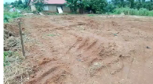
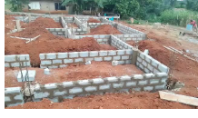
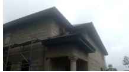

Construction Progress Overview
This HTML version preserves the original two-column document layout while presenting each image with a short, clear description beside it. It is ready to use as an updated site page or project documentation section.
Image Log and Descriptions
Each image appears in the left cell, with its matching summary in the right cell.
|
Image 1
 |
Early Phase
Site PreparationThis image shows the project site after clearing and grading work. The land has been opened up and leveled to prepare for the building layout, creating a stable base for the next stage of foundation construction. |
|
Image 2
 |
Structural Base
Foundation and Block WorkThis image captures the foundation stage, where block work has started to define the building footprint. The visible layout shows room divisions and structural lines taking shape as the project moves into formal construction. |
|
Image 3
 |
Advanced Stage
Structural Elevation and RoofingThis image shows the building at a more advanced stage, with the exterior walls already raised and the roof structure in place. It reflects major progress from the foundation phase to a visible and recognizable building form. |